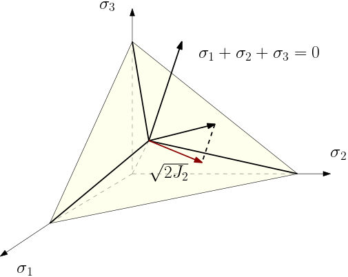
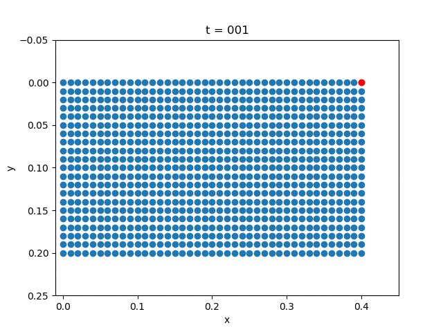
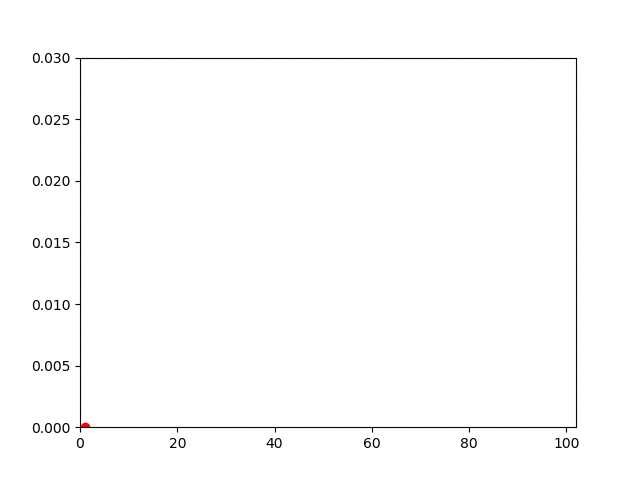

Plasticity
Plasticity Theory
The constitutive theory is about relating stress $\sigma$ and strain $\varepsilon$.
The total strain $\varepsilon$ can be decomposed into
The constitutive relation must characterize the relation between the stress $\varepsilon$ for both $\varepsilon^p$ and $\varepsilon^e$ . The constitutive law for $\varepsilon^e$ is linear, i.e.,
The constitutive law for $\varepsilon^p$ is described by an ordinary differential equation
Here $h_{ij}$ may arise from a potential function $g(\sigma, \xi)$, where $\xi$ is called internal variables
and $\phi$ is a scalar function of the form
where $f$ is the yield surface.
The Tresca yield surface is given by
In $J_2$ plasticity, we have
Thus we have

In the rate-indpendent plasticity, there exists $\lambda$ such that
Since both sides of (1) has derivatives with respect to time, it is time scale independent. That's why we call it rate-independent. Then the flow rule requires that
If $f<0$ (the yield surface is not hit), the inelasticity strain is not "active"; once $f=0$ is hit, the material reacts by increasing plasticity strain (since $\dot \lambda$ can be nonzero).
The deformation theory studies how $g$ is related to $\sigma$ and $\xi$. If $h$ directs along the outward normal of the yield surface, we can the consequent $g$ the normality rule. For example, $J_2$ plasticity can be formulated is subjected to normality rule. A particular case where normality rule holds is $g=f$, in which case we call (1) the associated flow rule with the yield surface.
Finally, the dynamics of internal variable is given by
The three equations (1), (2) and (3) fully characterizes the constitutive relation of $\varepsilon^p$.
Numerical Example
| Description | Displacement Field | Vertical Displacement |
|---|---|---|
| Plasticity |  |  |
| Elasticity |  |
using Revise
using PoreFlow
using SparseArrays
using LinearAlgebra
using PyPlot
αm = 0.0
αf = 0.0
β2 = 0.5*(1 - αm + αf)^2
γ = 0.5 - αm + αf
m = 40
n = 20
h = 0.01
NT = 100
Δt = 1/NT
bdedge = []
for j = 1:n
push!(bdedge, [(j-1)*(m+1)+m+1 j*(m+1)+m+1])
end
bdedge = vcat(bdedge...)
bdnode = Int64[]
for j = 1:n+1
push!(bdnode, (j-1)*(m+1)+1)
end
M = compute_fem_mass_matrix1(m, n, h)
S = spzeros((m+1)*(n+1), (m+1)*(n+1))
M = [M S;S M]
H = diagm(0=>[1,1,0.5])
K = 0.1
σY = 0.03
# σY = 1000.
state = zeros(2(m+1)*(n+1),NT+1)
velo = zeros(2(m+1)*(n+1),NT+1)
acce = zeros(2(m+1)*(n+1),NT+1)
stress = zeros(NT+1, 4*m*n, 3)
internal_variable = zeros(NT+1, 4*m*n)
t = 0.0
for i = 1:NT
@info i
##### STEP 1: Computes the external force ####
T = eval_f_on_boundary_edge((x,y)->0.02*sin(2π*i*Δt), bdedge, m, n, h)
# T = eval_f_on_boundary_edge((x,y)->0.0, bdedge, m, n, h)
T = [zeros(length(T)) -T]
T = compute_fem_traction_term(T, bdedge, m, n, h)
f1 = eval_f_on_gauss_pts((x,y)->0., m, n, h)
f2 = eval_f_on_gauss_pts((x,y)->0., m, n, h)
# f2 = eval_f_on_gauss_pts((x,y)->0.1, m, n, h)
F = compute_fem_source_term(f1, f2, m, n, h)
fext = F+T
##### STEP 2: Extract Variables ####
u = state[:,i]
∂∂u = acce[:,i]
∂u = velo[:,i]
ε0 = eval_strain_on_gauss_pts(u, m, n, h)
σ0 = stress[i,:,:]
α0 = internal_variable[i,:]
##### STEP 3: Newton Iteration ####
global t += (1 - αf)*Δt
∂∂up = ∂∂u[:]
iter = 0
while true
iter += 1
# @info iter
up = (1 - αf)*(u + Δt*∂u + 0.5 * Δt^2 * ((1 - β2)*∂∂u + β2*∂∂up)) + αf*u
global fint, stiff, α, σ = compute_planestressplasticity_stress_and_stiffness_matrix(
up, ε0, σ0, α0, K, σY, H, m, n, h
)
res = M * (∂∂up *(1 - αm) + αm*∂∂u) + fint - fext
A = M*(1 - αm) + (1 - αf) * 0.5 * β2 * Δt^2 * stiff
A, _ = fem_impose_Dirichlet_boundary_condition(A, bdnode, m, n, h)
res[[bdnode; bdnode .+ (m+1)*(n+1)]] .= 0.0
Δ∂∂u = A\res
∂∂up -= Δ∂∂u
err = norm(res)
# @info err
if err<1e-8
break
end
end
global t += αf*Δt
##### STEP 3: Update State Variables ####
u += Δt * ∂u + Δt^2/2 * ((1 - β2) * ∂∂u + β2 * ∂∂up)
∂u += Δt * ((1 - γ) * ∂∂u + γ * ∂∂up)
stress[i+1,:,:] = σ
internal_variable[i+1,:] = α
state[:,i+1] = u
acce[:,i+1] = ∂∂up
velo[:,i+1] = ∂u
end
x = []
y = []
for j= 1:n+1
for i = 1:m+1
push!(x, (i-1)*h)
push!(y, (j-1)*h)
end
end
for i = 1:5:NT+1
close("all")
scatter(x+state[1:(m+1)*(n+1), i], y+state[(m+1)*(n+1)+1:end, i])
scatter(x[m+1]+state[m+1, i],
y[m+1]+state[(m+1)*(n+1)+m+1, i], color="red")
xlabel("x")
ylabel("y")
k = string(i)
k = repeat("0", 3-length(k))*k
title("t = $k")
ylim(-0.05,0.25)
xlim(-0.01, 0.45)
gca().invert_yaxis()
savefig("u$k.png")
close("all");
plot(1:i, -state[(m+1)*(n+1)+m+1, 1:i])
xlim(0, NT+2)
ylim(0, 0.03)
scatter(i, -state[(m+1)*(n+1)+m+1, i], color="red")
savefig("du$k.png")
end
run(`convert -delay 10 -loop 0 u*.png plasticity_u.gif`)
run(`convert -delay 10 -loop 0 du*.png plasticity_du.gif`)